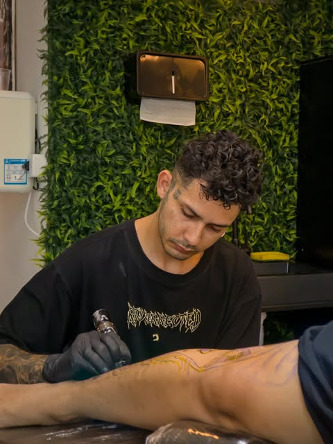
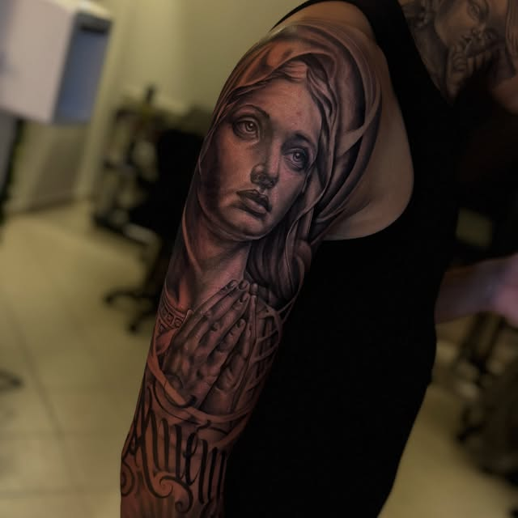
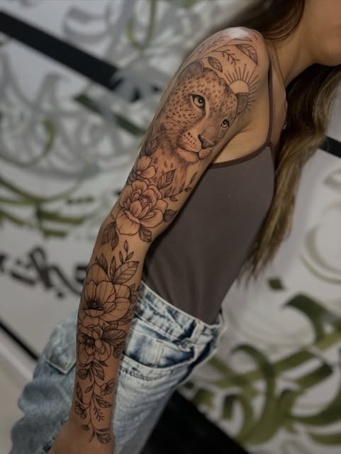
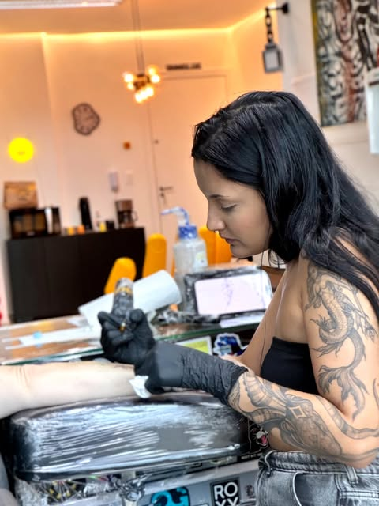
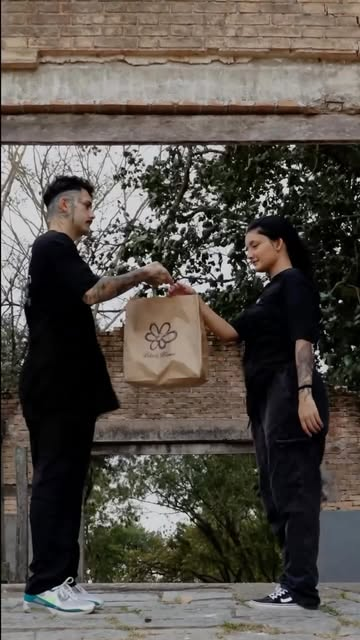
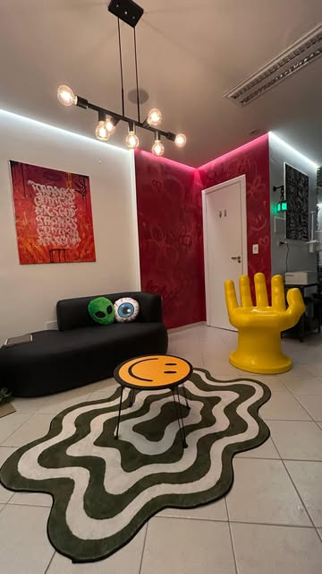
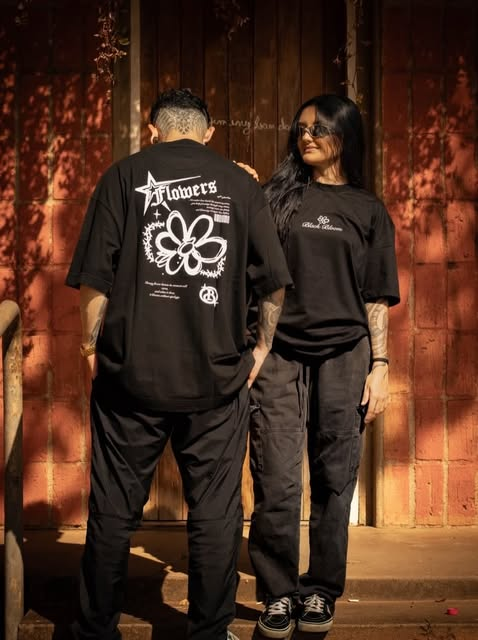

01 / VICTOR TELESVictor Teles
Contraste, composição e detalhes que dão presença a cada trabalho.
Explorar trabalhos do Teles ↗DUAS ASSINATURAS. UM MESMO ESPAÇO.
Tatuagens com Victor Teles e Carol Garcia.
Conheça os estilos, encontre sua conexão
e comece uma conversa.

01 / PRETO & CINZAVictor Teles ↗
02 / DELICADAS & FINE LINECarol Garcia ↗DO CONTRASTE AO TRAÇO FINO. ENCONTRE O SEU.01 / TRABALHOS SELECIONADOS
6 trabalhos · Dois artistas, diferentes possibilidades.
Veja os detalhes de cada trabalho e converse com o artista que combina com sua ideia.
02 / OS ARTISTAS
Traços diferentes, a mesma vontade de criar.
Encontre o estilo que conversa com você.

01 / VICTOR TELESContraste, composição e detalhes que dão presença a cada trabalho.
Explorar trabalhos do Teles ↗
02 / CAROL GARCIALeveza nos traços, cuidado nos detalhes e espaço para o seu significado.
Explorar trabalhos da Carol ↗
03 / NOSSA HISTÓRIA
Um casal de tatuadores, dois estilos e um espaço para criar juntos.
Victor Teles e Carol Garcia abriram o Black Bloom no Jardim Aquarius, em São José dos Campos. No studio que compartilham, cada um traz seu jeito de fazer arte: ele, com preto e cinza, lettering e freehand; ela, com tatuagens delicadas e fine line.
Essa criação também vai além da pele. As camisetas que eles fazem levam um pouco do Black Bloom para o dia a dia de quem passa por aqui.

SEU PRÓXIMO PONTO DE ENCONTRO.04 / NOSSO ESPAÇO
Arte nas paredes, cor nos detalhes e um lugar para conversar sobre o que você quer levar na pele. Esse é o nosso canto no Jardim Aquarius.
Antes de visitar, fale com a gente para combinar o atendimento e receber o endereço completo.
Combinar minha visita ↗Jardim AquariusSão José dos Campos — SP
05 / ALÉM DA PELE
Arte que também vai com você.
Conheça as camisetas feitas por nós e consulte as peças disponíveis no studio.
Modelos, tamanhos e valores pelo WhatsApp.
Óculos em colaboração.Uma parceria em desenvolvimento. Novidades por aqui.

DO PRIMEIRO OI AO PROJETO
Uma referência, um significado ou algo que ainda precisa ganhar forma.
Com o artista, vocês alinham desenho, local do corpo, tamanho e orçamento.
Disponibilidade, preparação e detalhes da sessão são definidos no WhatsApp.
06 / VAMOS CRIAR?
Conta a sua. O orçamento é personalizado, feito diretamente com o artista pelo WhatsApp.
ANTES DO PRIMEIRO TRAÇO
Converse com o artista pelo WhatsApp e envie sua ideia, referências, local do corpo e tamanho aproximado. O valor e os próximos passos são combinados diretamente na conversa.
Você pode começar com uma ideia e algumas referências. Converse com Teles ou Carol sobre o que imagina para construírem o projeto juntos.
O studio fica no Jardim Aquarius, em São José dos Campos. Confirme disponibilidade, endereço completo e horário diretamente com o artista antes de ir.
Use o botão “Consultar camisetas” para conferir modelos, tamanhos, valores e combinar a compra com o studio.